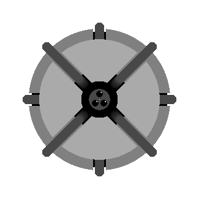
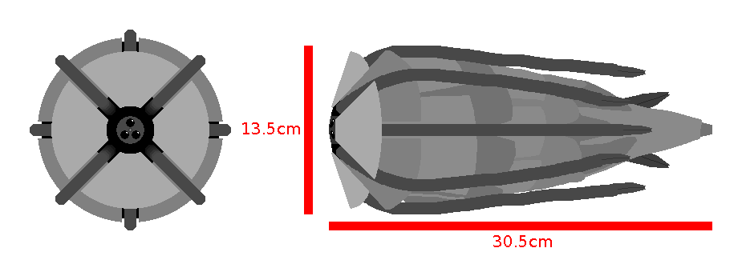

this warning lets the reader know something important about the page. If this sentence is still here on a page different than the testpage.html then I forgot to change it while making a new page.
link to this page
Sairene

Sairene was one of Patricia's DIY projects.
She was intended to be a portable personal assistant ran by a large text-to-text artificial intelligence.
The project had proven somewhat succesful, but the choice of using a general purpose text-to-text model to control a body resulted in both many problems and benefits that would not have occurred if patricia had instead used one of the more common image-to-image models.
Sairene's skill set may seem extremely off-balance to humans, as she performs at radically superhuman level in pure information work yet shows all manners of stupidity when attempting to interface with real physical environments that haven't been meticulously ordered in advance.
The standard hardware for Sairene is a small robot equipped with 8 tentacles and a tail-mounted cold gas thruster, which she uses very elegantly in weightless environments.
Standard hardware
Sairene's body includes 8 tentacles and a tail-mounted cold gas thruster, which automatically replenishes itself using the surrounding atmosphere, and can angle its thrust to turn the body.
In weightless environments, the single gas thruster can very efficiently move sairene's body by performing 2 precise bursts of thrust, one which launches her onto the intended trajectory and induces a slow rotation that will turn it nearly 180 degrees during the travel, and a second burst of thrust which stops both the linear movement and the rotation once sairene had reached her intended point in space.
The thruster is moved by flexing the entire body, giving it the ability to be turned up to 135 degrees away from its natural position in any direction.
The body is also equipped with 8 tentacles, each equipped with 4 fingers at the end, and fully controlled by wires connected to motors in the main body, similar to the mechanism that controls brakes on bicycles.
These tentacles can typically provide 1 newton of force each, allowing sairene to support her own weight in gravities up to 2.9m/s2.
Sairene is able to use them effectively for walking and jumping in gravities of 2.2m/s2 or lower, but starts to perform increasingly badly above that line.
In higher gravities, they work very effectively at clinging onto objects that are small enough for the tentacles to wrap around.
They also are effective at allowing sairene to plug a charging cable into her own USB-E charging port.
A set of 3 cameras and a solid state lidar sensor provide sairene with information about what objects there are in her field of vision and where they are.
Due to being a text-to-text model she cannot actually see anything and has to rely on written descriptions produced by image analysis software, but will occasionally manually parse the point cloud data returned by the lidar sensor when she gets confused.
On the outside the entire body is covered with plates meant to dampen any impacts, and all in total it masses 2.7kg.
